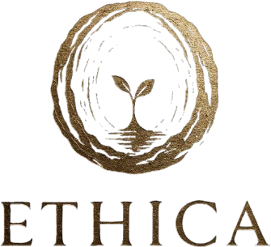

식사 후 일정이 있는 밤에
쇼트 코스
총 5장·테이블석·1~8명
'식사 후 일정이 있다', '술을 중심으로 즐기고 싶다'는 요청에 맞춰 일부러 가볍게 구성한 총 5장. ETHICA 여정의 서장으로.
14,800세금 포함
예약 가능일 보기


긴자 ETHICA | 미쉐린 2스타 MAZ 출신 셰프의 이노베이티브(전통과 국경을 넘어 자유로운 발상과 기술로 탄생하는 새로운 미식 체험) · 미쉐린 가이드 도쿄 3년 연속 셀렉티드 선정

Philosophy
메뉴에 적힌 것은 요리 이름이 아니라 '지구의 탄생', '공룡의 시대와 대멸종' 같은 시대의 이름뿐. 무엇이 나올지는 눈앞에 놓이는 순간에야 알 수 있습니다. 지구가 태어나던 무렵의 풍경, 문명마다 길러 온 지혜와 기법, 향신료를 현대의 기술로 재구성해 하나의 이야기로 코스를 엮었습니다. 이곳에서 보내는 몇 시간이 식사를 넘어선 기억으로 마음에 남기를 바랍니다.
시공간의 조각을 한 접시씩 응축해, 오감을 울리는 여정으로 빚어냅니다.
Cenote
긴자에 홀연히 나타난, 고대 중남미 문명의 성스러운 샘 '세노테'.
땅은 깊을수록 더 오래된 시대의 지층입니다. 세노테의 물 밑에는 빙하기에 생긴 종유석이 지금도 잠겨 있습니다.
푸른 테이블은 그 수면. 한 접시마다 서로 다른 시대의 깊이까지 잠수합니다. 첫 번째 접시는 38억 년 전의 바다. 세 번째 접시에서 가장 깊은 46억 년 전에 닿습니다. 그곳에서 떠올랐다가 마지막에 다시 한번 깊이 잠수하는, 총 8장의 여정입니다.
수면 = 지금, 긴자커피·홍차
첫 번째 접시,38억 년 전
최초의 생명이 태어났다고 전해지는 심해의 열수에서 여정이 시작됩니다.
다섯 번째 접시,2억 년 전
공룡의 시대, 그리고 그 끝.
일곱 번째 접시,500년 전
500년 전, 바다를 건너 식재료가 오가던 시대로.
ETHICA 컬렉션 · 2026년 가을 중 3개 장만 발췌. 식재료는 계절과 수급에 따라 바뀝니다.
Innovative Plates
ETHICA의 요리는 지구의 역사와 문명, 자연의 풍경을 요리로 재구성합니다.
단순히 아름다움에 그치지 않고, 무엇보다 맛의 완성도를 최우선으로 추구합니다.
그 본질에 다가가기 위해,
이 세 가지를 소중히 여깁니다.


Executive Chef
총괄 셰프 마쓰나에는 미쉐린 2스타 이노베이티브 'MAZ', 1스타 중식 'Koho'를 비롯해 일식, 프렌치, 이탈리안, 스패니시 등 폭넓은 장르에서 경험을 쌓아 왔습니다. 각각의 요리에서 다져 온 기술과 미각을 자신만의 감성으로 융합하며, 무엇보다 맛의 완성도를 추구합니다. 다채로운 경험에서 나온 자유로운 발상으로, 지구의 역사와 고대 문명의 기억을 독창적인 한 접시로 승화시킵니다.
MASAO ANDRÉS MATSUNAE GUZMÁN
Culinary Philosophy

ETHICA가 추구하는 것은 식재료의 희소성이나 유지의 진한 맛에만 가치를 두는 것이 아니라, 하나하나의 소재와 마주하며 그 잠재력을 최대한으로 끌어내는 것입니다.
튀일과 크로칸테로 섬세한 식감을 더하고, 에스푸마로 입안에서 가볍게 녹아드는 식감을 만들어 냅니다. 다양한 기법을 자유롭게 조합해 소재의 개성을 살리면서 맛의 완성도를 추구합니다.
일반적인 코스 요리에서는 식재료를 나이프로 잘라, 곁들임과 소스와의 조합을 손님에게 맡기는 경우도 적지 않습니다. 반면 ETHICA에서는 그 한 입이 완성되기까지를 마쓰나에 셰프가 설계합니다.
채소 등의 곁들임도 크기와 두께를 밀리미터 단위로 조정합니다. 주인공이 되는 식재료, 곁들임, 소스, 식감의 모든 것이 한 스푼 안에서 조화를 이루도록 치밀하게 구성합니다.
모든 요리를 스푼 하나로 드실 수 있는 것은, 한 입마다 요리 전체의 맛이 완성되도록 설계했기 때문입니다.
The Cave
암벽에 둘러싸이고 조명을 낮춘 동굴 같은 공간. 긴자 거리에서 한 걸음 들어서면 여정이 시작됩니다. 총 24석. 이용 목적에 맞춰 세 가지 좌석을 마련했습니다.


Courses
미쉐린 가이드 도쿄 3년 연속 셀렉티드 선정
고민되신다면 ETHICA를 대표하는 'ETHICA 컬렉션'을 추천합니다. 토·일 런치에도 같은 코스를 준비합니다.
식사 후 일정이 있는 밤에
총 5장·테이블석·1~8명
'식사 후 일정이 있다', '술을 중심으로 즐기고 싶다'는 요청에 맞춰 일부러 가볍게 구성한 총 5장. ETHICA 여정의 서장으로.
14,800세금 포함
예약 가능일 보기처음 오시는 분께
총 8장·테이블석·1~8명
지구 46억 년의 이야기를 8개의 접시로 오가는, ETHICA를 대표하는 코스.
19,800세금 포함
이 여정의 예약 가능일 보기생일·기념일에·2명부터
총 9장·테이블석·2명부터·메시지 플레이트 포함
그랜드 컬렉션 총 9장에 손으로 그린 메시지 플레이트를 곁들여. 46억 년 이야기의 마지막이 소중한 분과의 기념으로 남는 한 접시가 되도록.
25,200세금 포함
기념일 코스 예약 가능일 보기
데이트·기념일에·1~2명
총 9장·주방 안 프라이빗 카운터·1~2명·하루 한 팀
주방 안, 하루 한 팀만을 위한 카운터. 그랜드 컬렉션을 바탕으로 더 희귀한 부위와 그날만의 식재료를 더해, 셰프가 눈앞에서 완성하는 총 9장.
27,800세금 포함
카운터 예약 가능일 보기
비즈니스 다이닝·접대에·2~4명
총 9장·주방 안 프라이빗 룸·2~4명·하루 한 팀
주방 안, 하루 한 팀만을 위한 프라이빗 룸. 시장에 좀처럼 나오지 않는 식재료와 숙성시킨 일품으로 그려내는 총 9장을, 플레이팅 스테이션에서 불과 30cm 거리에서.
29,800세금 포함
프라이빗 룸 예약 가능일 보기베지테리언 고객께·1~8명
총 8장·테이블석·1~8명
ETHICA의 이야기를 베지테리언 식재료로 따라가는 총 8장. 비건·무슬림 프렌들리 요청도 반영해 드립니다.
19,800세금 포함
예약 가능일 보기특별한 밤에
총 9장·테이블석·1~8명
컬렉션의 이야기를 희귀 식재료로 업그레이드해 총 9장으로 확장했습니다. 조금 더 길고 깊게 여행하고 싶은 밤에.
24,800세금 포함
예약 가능일 보기요금은 모두 1인 기준·세금 포함입니다.
※ '인기 1위'는 타베로그의 '인기 No.1' 표시(최근 30일간 예약 팀 수가 가장 많은 코스·2026년 10월 기준)에 근거합니다.
Q&A
ETHICA의 이야기를 온전히 따라가는 'ETHICA 컬렉션'(총 8장)을 추천합니다. 식사 후 일정이 있는 날에는 총 5장의 쇼트 코스도 선택하실 수 있습니다.
쇼트 코스(총 5장)는 약 1.5시간, ETHICA 컬렉션(총 8장)은 약 2시간 반, 총 9장의 코스는 2시간 반~3시간 정도 소요됩니다.
손으로 그린 메시지 플레이트를 준비해 드립니다. 생일·기념일 코스를 선택하시거나 예약 시 문의해 주십시오. 긴자 Calon의 '시들지 않는 꽃다발'도 준비할 수 있으니, 원하시면 말씀해 주십시오.
주방 안에 2~4명·하루 한 팀 전용 프라이빗 룸이 있습니다. '가스트로노미 익스피리언스(총 9장)'로 예약해 주십시오.
요리에 맞춘 논알코올 페어링(9,800)을 준비하고 있습니다. 원하시면 예약 시 알려 주십시오.
알레르기는 예약 시 일행분의 알레르기도 함께 알려 주십시오. 베지테리언 ETHICA 컬렉션도 준비되어 있습니다. 비건·무슬림 프렌들리 요청도 예약 시 알려 주시면 준비해 드립니다.
네. 쇼트 코스, ETHICA 컬렉션, 그랜드 컬렉션, 베지테리언 ETHICA 컬렉션, 셰프스 카운터는 1명부터 예약하실 수 있습니다. 생일·기념일 코스와 프라이빗 룸의 가스트로노미 익스피리언스는 2명부터입니다.
스마트 캐주얼 차림으로 방문해 주십시오. 민소매·반바지·비치 샌들은 삼가 주시되, 부담 없이 이용해 주시기 바랍니다.
신용카드(VISA·Master·JCB·AMEX·Diners) 외에 교통계 IC카드·iD·QUICPay를 이용하실 수 있습니다.
자리가 있으면 직전에도 예약하실 수 있습니다. 먼저 예약 가능일을 확인해 주십시오.
20명까지 대관 상담이 가능합니다(스탠딩 형식은 문의). 전화(03-6228-7313·접수 12:00~17:00, 일본어 응대)로 문의해 주십시오.
Access
미쉐린 가이드 도쿄 3년 연속 셀렉티드 선정
이 여정에 마음이 움직이셨다면 예약 가능일을 확인해 주십시오. 기념일이나 비즈니스 다이닝 상담은 전화(12:00~17:00, 일본어 응대)로도 받습니다.
예약 가능일 보기 03-6228-7313